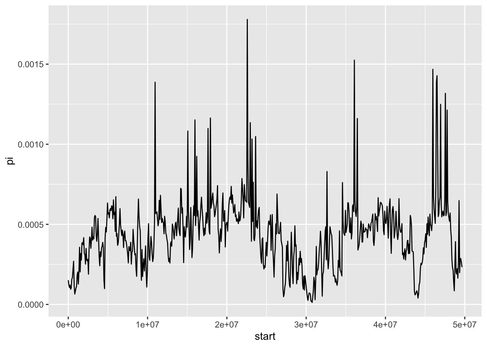

1.3 Calculating statistics at the whole genome level
So far we have calculated descriptive statistics from two sets of sequence data. This is obviously useful to demonstrate how these statistics work and reinforcing our understanding of them. However, in modern evolutionary genetics, we are often working with much larger datasets than what we have dealt with so far. As sequencing technology becomes cheaper, faster and more accessible, we are regularly working with genome-scale data. This has implications for how we handle data and also how we interpret it and use it to test hypotheses or make some form of evolutionary inference.
In this section of the tutorial, we will use a package called PopGenome to read variants called from whole genome resequencing data into R and then we will calculate nucleotide diversity within and among populations and also along a single chromosome. A word of caution: PopGenome is a very useful package, but it is not always the most user friendly, so we have done our best to simplify matters as much as possible here.
1.3.1 Reading in variant data
The data we are going to be working with for this section is a set of SNP calls from whole-genome resequencing of Passer sparrows. It was originally used in a study on the evolution of human commensalism in the house sparrow by Ravinet et al. (2018). In the dataset there are SNPs from four sparrow species - the house sparrow, the Italian sparrow, the Spanish sparrow, the tree sparrow and also data from a house sparrow sub-species known as the Bactrianus sparrow.
The data comes in two parts. We’ll deal with the actual SNP data first. This is stored in a file called a VCF, which stands for variant call format.
VCF files can quickly become very very big, so the one we are using today is a much smaller, randomly sampled version of the true dataset from a single chromosome only. However it is still quite a large file size, so the file is compressed, and there are some preprocessing steps you will need to do before you can open in it in R.
- First, download the VCF and it’s index (we need this to read it in to R)
- Move the downloaded VCF into your working directory (use
getwdif you don’t know where that is)
We will work with this file soon, but first some housekeeping. We eventually want to investigate differences between populations, but the data does not currently contain information about the populations, only individuals. Download the population data and put it in your working directory. The following code reads in the population data and creates a vector of individuals which are house sparrows.
You can also create these vectors for each of the other species present. Have a look at the sparrow_info object to see what they are. We will also do this below.
bactrianus <- sparrow_info$ind[sparrow_info$pop == "Bactrianus"]
spanish <- sparrow_info$ind[sparrow_info$pop == "Spanish"]
italian <- sparrow_info$ind[sparrow_info$pop == "Italian"]
tree <- sparrow_info$ind[sparrow_info$pop == "Tree"]Now you are done, we are ready to calculate some parameters on genomic data!
1.3.2 Calculating nucleotide diversity statistics across sliding windows
With GenoPop, it is straightforward to calculate nucleotide diversity in windows. We can run the code below and it will likely take a few minutes to run.
# calculate nucleotide diversity
pi_windows <- Pi("./sparrow_chr8_downsample.vcf.gz", exclude_ind = c(bactrianus, spanish, italian, tree),
seq_length = 49693984, window_size = 100000, skip_size = -25000)While we wait we can break this down:
- vcf_file - just defines the path to our vcf file
- exclude_ind - sets individuals to leave out of the analysis (i..e everything but house here)
- seq_length - this is the length of the chromosome, taken from the genome information
- window_size is the size of the windows we examine, here 100Kb
- skip_size is the step size for our sliding windows - 25Kb in this instance.
So, let’s recap so far. We have over 90,000 SNPs from chromsome 8 of 129 sparrows from five different species. With the GenoPop package, we have now relatively quickly and very easily calculated nucleotide diversity for the entire chromosome, in 100 Kb windows with a 25 Kb “step” between each of them.
We will learn more about sliding windows next week, so in this section we will more or less rush through the code and focus on the results. A sliding window analysis groups the data into (overlapping) bins, or “windows”. We can then calculate some summary statistic—\(\pi\) in our example—on each window instead of on each singe nucleotide. With our data, this means that instead of 90,000 plus estimates of nucleotide diversity, we will get as many as we have windows! This kind of summary significantly reduces noise in the data, so it is possible to visualise the trends along the genome.
The preceding code creates windows that are 100,000 bp long, with a distance of 25,000 bp between the start of each window (i.e., two adjacent windows overlaps with 75,000 bp). It then calculates \(\Pi\) in each window, and divides it with window length to obtain the length standardised measure \(\pi\).
We can take a look at the data we created by examining the pi_windows object.
So now we have a data.frame with the chromosome, the start and end positions for our windows and an estimate of nucleotide diversity. Because of the way the package works, we need to slightly alter this data.frame to make it easier to use. We can do that like so:
# first we make a tibble
pi_windows <- as_tibble(pi_windows)
# ensure data is numeric
pi_windows <- pi_windows %>%
mutate(start = as.numeric(Start)) %>%
mutate(end = as.numeric(End)) %>%
mutate(pi = as.numeric(Pi))With this done, it is now very simple to visualise the sliding window data.

With our plot we can see clearly there are several regions on this chromosome where there is a signficant reduction in nucleotide diversity, particularly around 30 Mb. We cannot say exactly what might be causing this without inferring other statistics or examining other data, but one possibility is that this is a region of reduced recombination where selection has led to a reduction in diversity. If it is shared with other sparrow species, it might suggest some kind of genome structure such as a centromere - where recombination rates are usually lower.
The point is that sliding window information like this can be extremely informative for evolutionary analysis. Although we only got a quick introduction to genomic data in today’s tutorial, we will return to this sort of dataset again in the next session and explore more fully how we can use it to infer processes that might shape the distribution of these sorts of statistics in the genome.